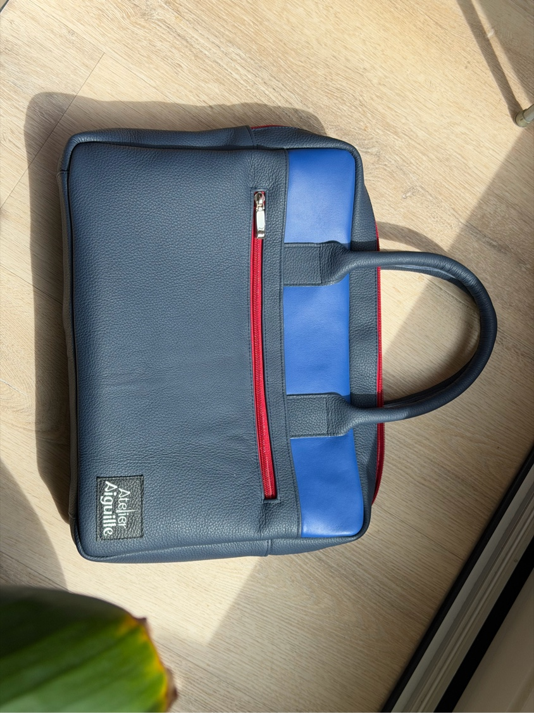
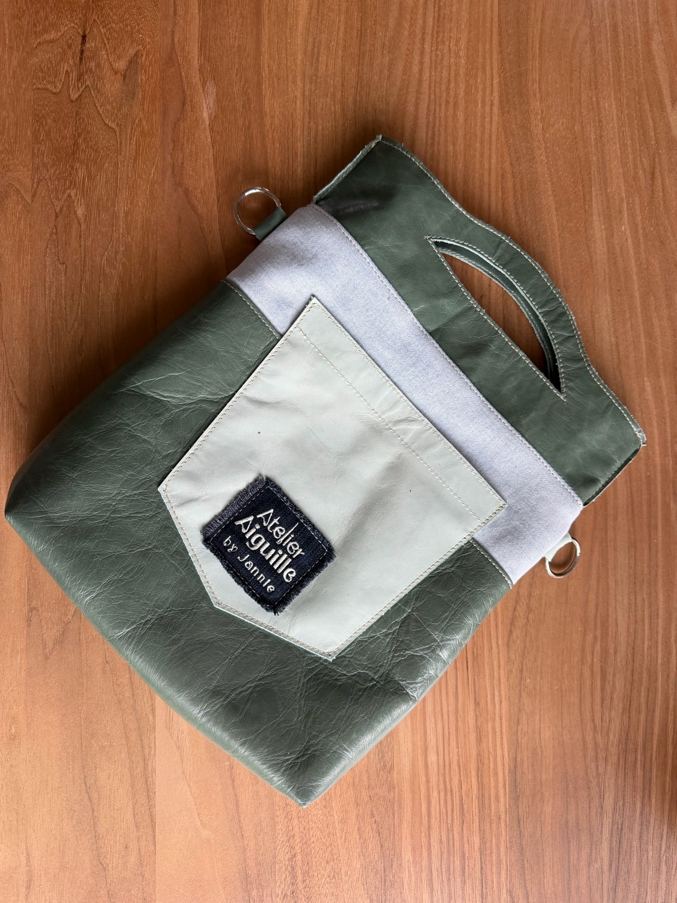
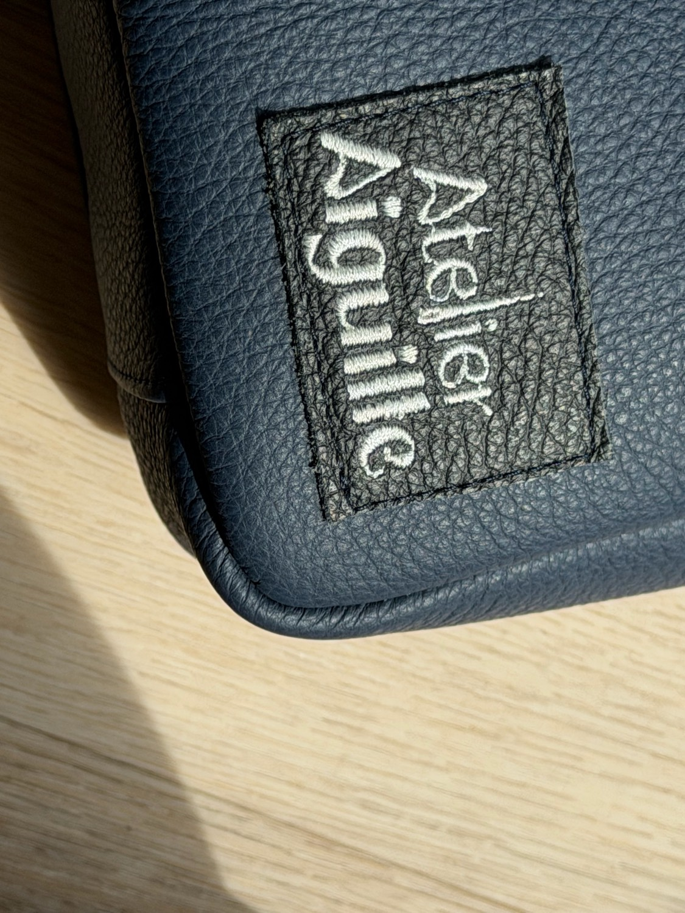
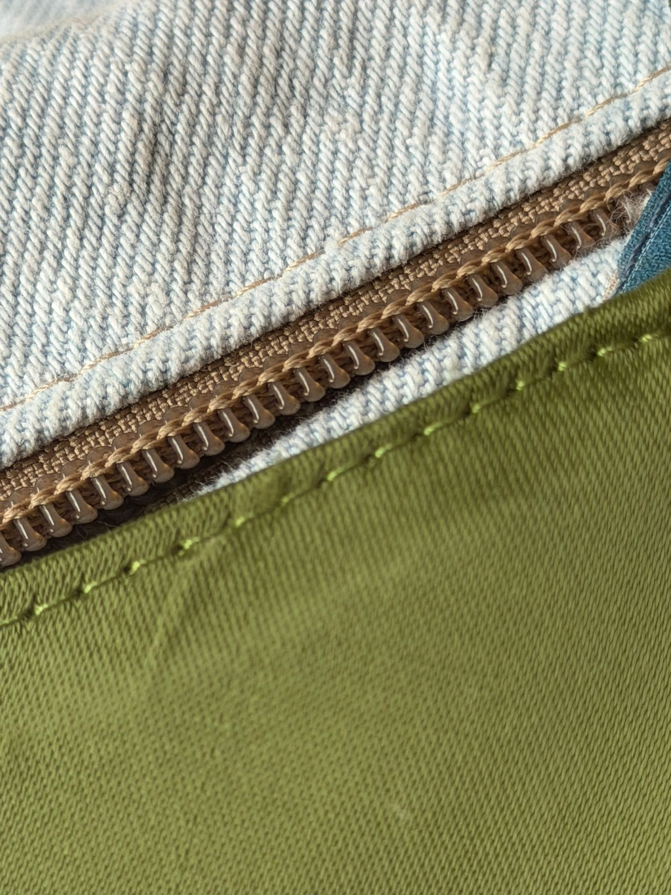

Handgemaakte kleding en tassen, vaak uit oude spijkerbroeken, reststoffen, leer en losse knopen. Bijna alles is uniek — gemaakt met aandacht, niet met haast. Gemaakt door Jannie.

Kleding van de
zolderkamer.
Een greep uit het atelier.






Stof, knopen, tijd.
Een losse lap stof wordt langzaam een kledingstuk. Een oude spijkerbroek krijgt een tweede leven als tas. Jannie houdt van het puzzelen, het combineren, het netjes afwerken.
Het is geen mode in de snelle zin. Geen collectie die volgend seizoen vervangen wordt. Het zijn stukken die je lang draagt, omdat ze met aandacht zijn gemaakt — en omdat ze ergens vandaan komen.

Kleding, tassen, en alles wat ertussen valt.
-
01
Kleding
Eenvoudige basismodellen met opvallende details. Kleur en grafische prints — geen veilige beige.
-
02
Tassen
Vaak uit oude jeans en restleer. Stevig, eigenzinnig, met zichtbare stiksels en gespen die een verhaal hebben.
-
03
Hergebruik
Stoffen, knopen, leer — Jannie bewaart het en gebruikt het opnieuw. Verschillende knopen aan één blouse zijn geen fout.
Be Dongen.
Wear Dongen.
Iets vragen, iets laten maken, of gewoon kijken?
Jannie werkt vanuit haar atelier in Dongen. Op afspraak — dan is er rust om alles rustig te bekijken.